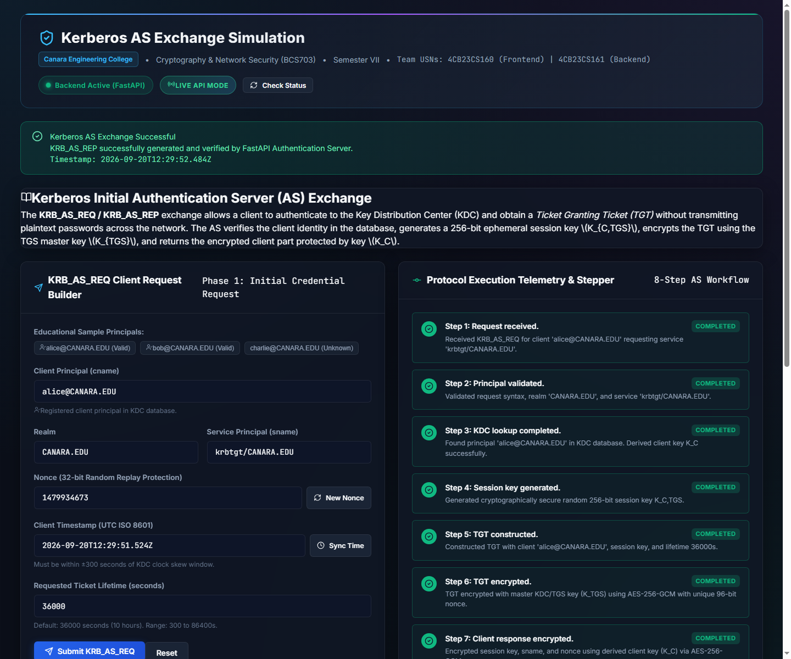
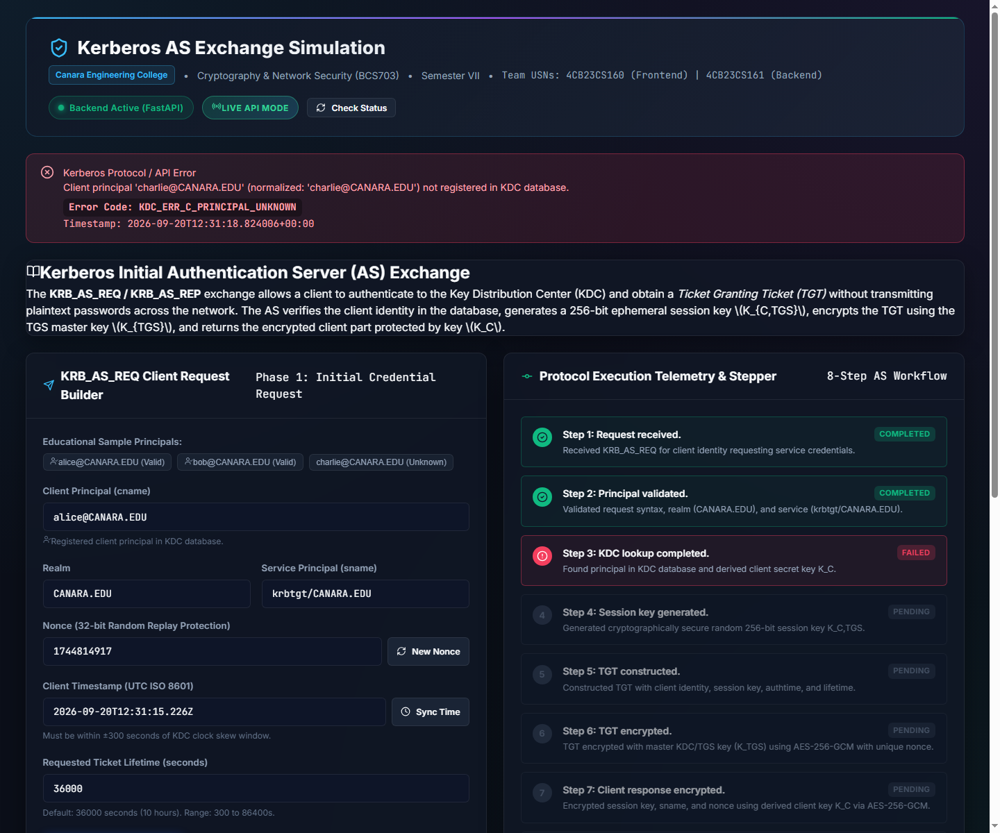

Kerberos is a centralized, trusted third-party network authentication protocol originated at MIT (RFC 4120). Designed around the classical "three-headed dog" architectural model, Kerberos establishes mutual authentication across three entities: the Client, the Key Distribution Center (KDC), and the Application Server. The KDC houses two functional servers: the Authentication Server (AS) and the Ticket Granting Server (TGS). The Authentication Server (AS) Exchange constitutes Phase 1 of the Kerberos protocol—the foundational gateway where a client proves its identity without ever transmitting passwords across the network, thereby obtaining a Ticket Granting Ticket (TGT) and an ephemeral session key ($K_{C,TGS}$).
Traditional distributed login mechanisms transmit credentials or static hashes over insecure channels, exposing networks to eavesdropping, packet sniffing, pass-the-hash attacks, and password replay. Enterprise Kerberos implementations (e.g., Microsoft Active Directory, MIT Kerberos) provide robust defense but operate as opaque binary black boxes over binary ASN.1 DER streams on UDP/TCP port 88. For undergraduate computer science students, tracing individual keys, timestamps, nonces, and ticket structures inside these production streams is exceedingly difficult. Motivation: To design and implement a full-stack, transparent, and cryptographically verified educational simulation that visualizes every step of the AS exchange in real time.
| Req ID | Functional Requirement (FR) |
|---|---|
| FR-1 | Client request generation with principal, realm, service, nonce, timestamp, and lifetime. |
| FR-2 | Server-side validation of realm, service, and clock skew freshness ($\le 300\text{s}$). |
| FR-3 | KDC user lookup and client key derivation ($K_C$) via PBKDF2; error mapping if unknown. |
| FR-4 | Plaintext TGT assembly and encryption using master key $K_{TGS}$ via AES-256-GCM. |
| FR-5 | Client package construction and encryption using $K_C$ with session key and nonce echo. |
| FR-6 | Structured RFC error emission (`KDC_ERR_C_PRINCIPAL_UNKNOWN`, `KRB_AP_ERR_SKEW`). |
| Req ID | Non-Functional Requirement (NFR) |
|---|---|
| NFR-1 | Confidentiality: Zero plain passwords, salts, or master keys in API JSON payloads. |
| NFR-2 | Integrity: AES-GCM 128-bit authentication tags; tamper attempts throw `InvalidTag`. |
| NFR-3 | Replay Defense: Multi-factor protection via nonces, timestamps, and ticket lifetimes. |
| NFR-4 | Performance: Sub-50ms server response latency for cryptographic processing. |
| NFR-5 | Testability: Fully automated unit and integration suites with 100% pass rates. |
Environment: Python 3.12, FastAPI, Pydantic V2, PyCA Cryptography, Node.js v18+, React 18, Vite, Vitest, Pytest.
Limitations: Focus is confined to the initial AS Exchange (Phase 1). Subsequent TGS service ticket exchanges (Phase 2) and AP mutual authentication (Phase 3) constitute future extensions. Transport utilizes JSON/REST over HTTP rather than raw ASN.1 over UDP port 88.
The simulation implements a decoupled, full-stack client-server architecture designed around strict boundaries of cryptographic isolation. The client application models a user workstation requiring authentication. The server application acts as the KDC Authentication Server. Communication occurs over standard HTTP REST endpoints with strict JSON schemas. Sensitive cryptographic secrets (user master passwords, derived encryption keys, and unencrypted session keys) are strictly contained within their respective trust domains and never cross the wire.
Client Simulator: Encapsulates user input and request formulation. It has zero knowledge of server master keys or other users' credentials.
KDC Authentication Server: The authoritative entity containing user accounts and service keys. It generates ephemeral session keys and seals them into ticket structures.
Ticket Granting Service (TGS): Represented conceptually via the master service key $K_{TGS}$. The TGT issued by the AS can only be decrypted and accepted by the TGS in subsequent protocol phases.
The implemented Authentication Server exchange faithfully models the 8 fundamental telemetry steps defined by the Kerberos V5 specification (RFC 4120), transitioning from client request submission to structured response delivery:
| Step | Milestone Name | Technical Processing & Cryptographic Actions | Key Utilized | Security Goal |
|---|---|---|---|---|
| Step 1 | Request received | Client constructs and transmits `KRB_AS_REQ` containing `cname`, `realm`, `sname`, `nonce` ($N_1$), timestamp ($T$), and requested lifetime. No password or hash is sent. | None (Cleartext) | Identity Assertion |
| Step 2 | Principal validated | KDC verifies realm equals `CANARA.EDU`, service equals `krbtgt/CANARA.EDU`, and evaluates clock freshness: $|T_{server} - T_{client}| \le 300\text{s}$. | None | Replay & Bounds Defense |
| Step 3 | KDC lookup completed | Server searches in-memory store. If user exists, server retrieves credential and derives client key $K_C$ via PBKDF2. If absent, exchange halts with `KDC_ERR_C_PRINCIPAL_UNKNOWN`. | Derived $K_C$ (PBKDF2) | Identity Verification |
| Step 4 | Session key generated | KDC generates a fresh 256-bit ephemeral symmetric session key ($K_{C,TGS}$) using a cryptographically secure pseudo-random number generator (`secrets.token_bytes(32)`). | None (Ephemeral) | Key Freshness |
| Step 5 | TGT constructed | Plaintext Ticket Granting Ticket is assembled with fields: `cname`, `sname`, `issue_time`, `expire_time`, and the embedded session key $K_{C,TGS}$. | Plaintext Struct | Ticket Formatting |
| Step 6 | TGT encrypted | TGT structure is encrypted using KDC master service key $K_{TGS}$ via AES-256-GCM with a fresh 96-bit IV. Produces opaque ciphertext with 128-bit integrity tag. | Master Key $K_{TGS}$ | TGT Tamper-Proofing |
| Step 7 | Client response encrypted | Client response package containing $K_{C,TGS}$, nonce echo ($N_1$), expiry, and realm is encrypted using derived client key $K_C$ via AES-256-GCM with fresh 96-bit IV. | Client Key $K_C$ | Confidential Key Delivery |
| Step 8 | AS response generated | KDC packages encrypted TGT and encrypted client part into final `KRB_AS_REP` structure, appends sanitized telemetry steps, and returns HTTP 200 to client. | Structured Transport | Response Dispatch |
A critical pedagogical feature of our simulation is stepped failure progression. When an unauthorized principal (e.g., `charlie@CANARA.EDU`) initiates an AS request, the KDC does not produce a generic crash. Instead:
Standard passwords are vulnerable to dictionary search. In Kerberos, passwords are converted into symmetric cryptographic keys using a string-to-key function. In our simulation, the KDC implements PBKDF2-HMAC-SHA256 according to NIST SP 800-132:
Security Benefit: The 100,000 iterations introduce a deliberate computational cost (work factor) of several milliseconds per derivation. While imperceptible during legitimate authentication, it renders offline brute-force and rainbow table attacks computationally intractable for eavesdroppers.
Older Kerberos specifications (RFC 1510) relied on DES or CBC-mode ciphers requiring separate HMACs. Our implementation utilizes AES-256-GCM (Galois/Counter Mode), an Authenticated Encryption with Associated Data (AEAD) cipher specified in NIST SP 800-38D.
A critical distinction emphasized in this course project is the precise role of nonces in protocol security:
| Cryptographic Primitive | Algorithm / Standard | Parameters / Configuration | Operational Purpose |
|---|---|---|---|
| Key Derivation (KDF) | PBKDF2-HMAC-SHA256 | 100,000 iterations, 32-byte output, Salt: `Realm + Username` | Derive client secret key $K_C$ from user credentials |
| Ticket Encryption | AES-256-GCM (AEAD) | 256-bit key ($K_{TGS}$), 96-bit IV, 128-bit tag | Seal TGT so client cannot read or modify contents |
| Client Package Encryption | AES-256-GCM (AEAD) | 256-bit key ($K_C$), 96-bit IV, 128-bit tag | Deliver session key $K_{C,TGS}$ and nonce echo safely |
| Session Key Generation | CSPRNG (`secrets`) | 256-bit (32 bytes) cryptographically random, base64 | Ephemeral symmetric key for Client-TGS communication |
| Clock Skew Tolerance | UTC Comparison | $\pm 300$ seconds ($\pm 5$ minutes) maximum offset | Reject stale or replayed authentication requests |
Explanation: Utilizes Pydantic V2 to enforce clock skew freshness before requests reach the core service, immediately rejecting replayed or desynchronized requests.
Explanation: Normalizes principal strings, searches the KDC database, raises explicit domain errors for unknown users, and executes PBKDF2 key derivation using the user's password and salt.
Explanation: Encrypts payload dictionaries using AES-256-GCM. Generates a fresh 96-bit nonce via CSPRNG for every call, preventing keystream reuse and attaching a 128-bit authentication tag.
Explanation: Demonstrates the central Kerberos duality: the session key is sealed inside the TGT (for TGS) and also sealed inside the client package (for client), allowing shared secret establishment without network exposure.
The implementation was verified on `http://localhost:5173/` integrated with the active FastAPI server (`http://127.0.0.1:8000`). Four distinct verification scenarios were confirmed:
Verification was conducted using automated test runners across both frontend and backend suites:
| Suite | Test Target | Test Method / Assertion | Result |
|---|---|---|---|
| Backend | Valid AS Exchange | Verifies HTTP 200, ciphertext generation, and 8 telemetry steps | Passed |
| Backend | Unknown Principal | Asserts HTTP 404 and `KDC_ERR_C_PRINCIPAL_UNKNOWN` for unregistered user | Passed |
| Backend | Unsupported Service | Rejects service principals other than `krbtgt/CANARA.EDU` | Passed |
| Backend | Stale Timestamp | Rejects timestamps older than 300 seconds with clock skew error | Passed |
| Backend | Schema Validation | Rejects negative nonces, invalid lifetimes, and malformed emails | Passed |
| Backend | Decryption Integrity | Verifies client key successfully decrypts client part; matches session key | Passed |
| Backend | Tamper Detection | Verifies incorrect key or tampered ciphertext triggers AES `InvalidTag` | Passed |
| Backend | Session Key Uniqueness | Verifies subsequent requests receive distinct session keys and IVs | Passed |
| Backend | Secret Leakage Check | Scans raw JSON responses to confirm zero passwords/salts leaked | Passed |
| Backend | Health Check API | Confirms `/api/health` backward compatibility and course metadata | Passed |
| Frontend | Component Rendering (6) | Validates Header, Form, 8-step Timeline, Formatter, and Status alerts | Passed |
| Frontend | API Client Service (5) | Verifies health check, principal fetching, AS exchange, and offline mock | Passed |


The Course Project successfully conceptualized, engineered, and verified a transparent, educational full-stack simulation of the Kerberos Authentication Server (AS) Exchange. The system bridges the pedagogical gap between theoretical cryptographic concepts and practical software engineering, providing students and evaluators with complete visual and technical transparency into initial Single Sign-On authentication mechanics.
This project is an educational simulation developed for Cryptography & Network Security (BCS703). It utilizes modern RESTful JSON over HTTP instead of legacy binary ASN.1 DER encodings over UDP port 88. User accounts are maintained in memory for demonstration purposes. While cryptographically sound for classroom analysis, it is not intended as an enterprise production replacement for Active Directory or MIT Kerberos.
The project fulfills all requirements established by the syllabus for Cryptography & Network Security (BCS703). By integrating industry-standard cryptography (FastAPI, AES-256-GCM, PBKDF2) with an intuitive reactive frontend, the simulation provides an exemplary pedagogical instrument that demystifies complex network security protocols.